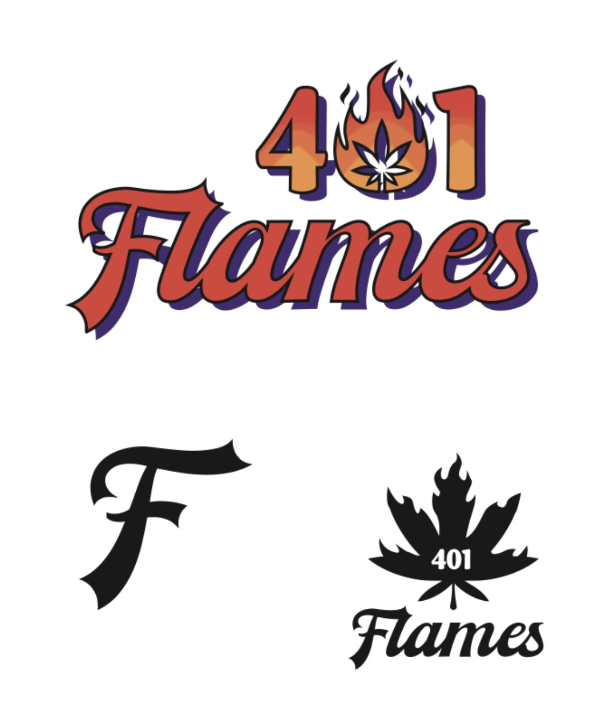
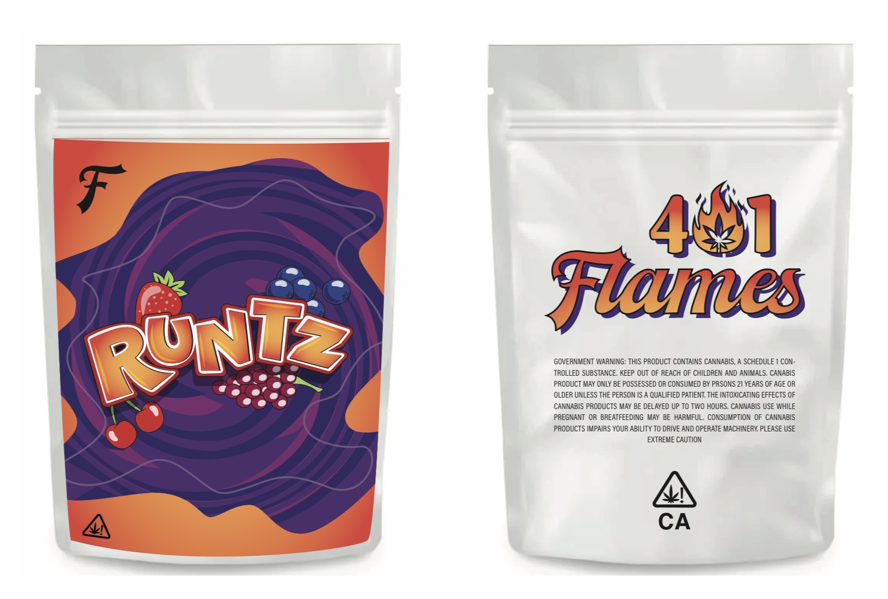

401 flames
Drawing inspiration from the urban culture and the dynamic nature of the industry, I developed a logo that captures attention with its bold, yet refined design. The logo features a stylized flame motif intertwined with the numbers "401," representing the brand's location and creating a sense of local pride. In addition to the logo, I created a suite of collateral materials, including business cards, packaging designs, and a social media style guide. These elements contribute to a comprehensive visual identity that ensures consistency across various touchpoints and enhances brand recognition.